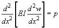

Euler's scientific concepts are not as lengthy as his contributions to mathematics. He contributed in the development of the Euler-Bernoulli beam theory (otherwise known as engineer's beam theory or classical beam theory). Pictured on the right is the beam theory. A beam is defined as a structure that has one side that is significantly bigger than others. The equation is especially practical in life and is often used for engineering purposes. The theory explains the relationship between a beam's displacement and the weight applied to the beam.
 Leonhard Euler
Leonhard Euler
